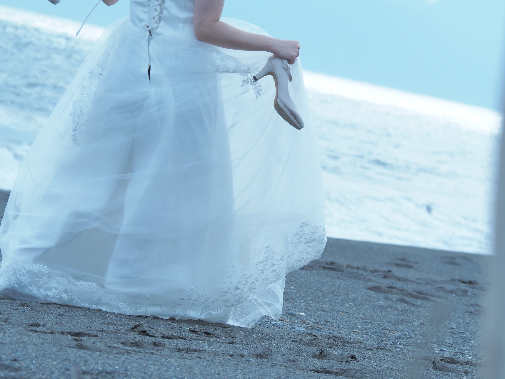
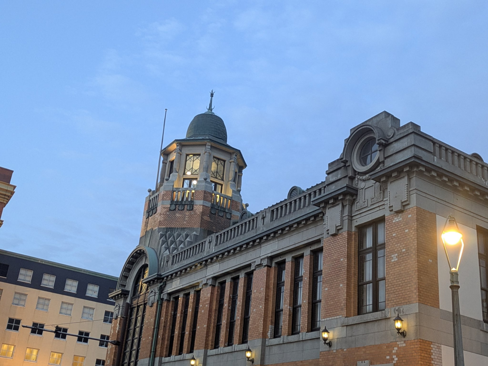
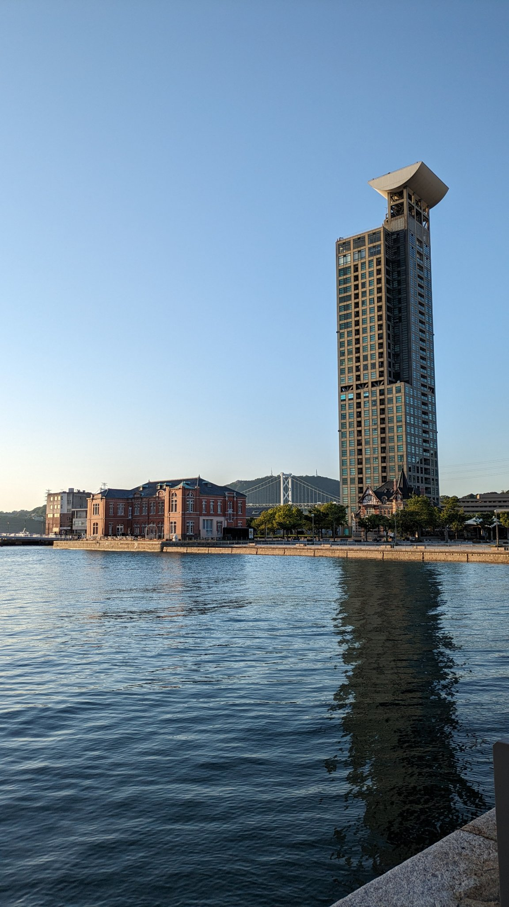
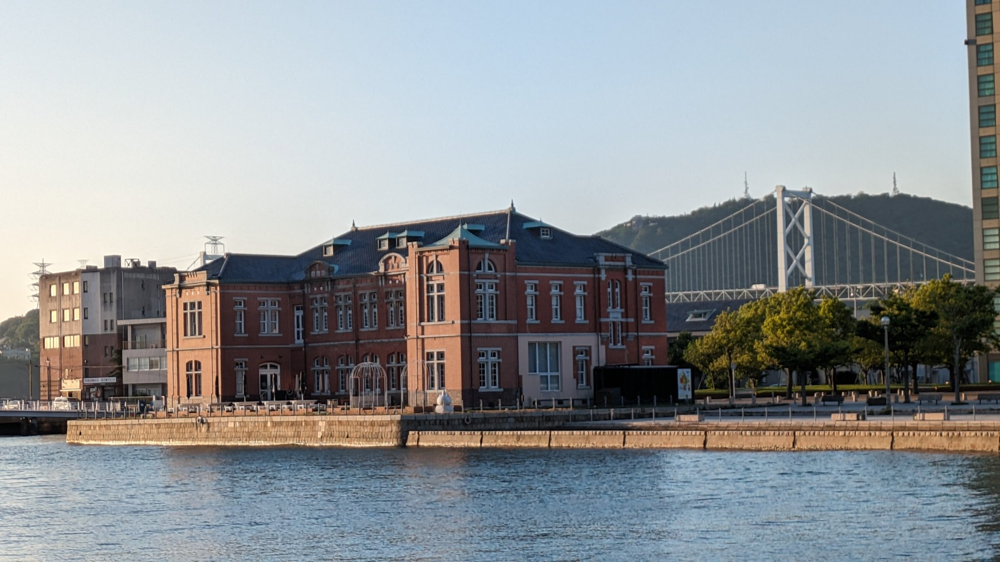

ON-LOCATION PHOTOGRAPHY— 01 / 05
日々の余白を、
写真に残す。
いつもの場所で、いつものあなたらしく。
その日だけの空気ごと、そっと写します。
FAMILY / COUPLE / WEDDING / EVERYDAY

SELECTED MOMENTS — 02 / 05
日々のかけら
門司港レトロなど、
思い出の場所で。



※ 門司港エリアのロケーション写真です。人物の作品は Instagram でもご覧いただけます。
※ 撮影場所によっては、施設や管理者への撮影許可が必要な場合があります。許可の申請手続きと費用は、お客様にてご手配をお願いしております（進め方が分からない場合はご相談ください）。
PROFILE
特別な日も、
なんでもない日も。
岩下 — 北九州市を拠点に活動する出張カメラマンです。
写真は趣味から始めて5年。写真館でのアシスタント、保育園のスナップ撮影、ホテル写真室での勤務を経て、独立しました。
前職は介護福祉士。車椅子や介助が必要な方の撮影も、無理のないペースで進められます。
ポーズをつくりこむより、その人たちの「いつもの空気」ごと残したいと思っています。
少し先の自分へ。
今日の景色を、ひとつ。
PLANS & PRICE — 04 / 05
撮影プラン
料金はすべて税込です。
プランの詳細は公式LINEでご案内します。
- プロフィール・SNSライトプラン（30分／15カット）12,000円〜
- カップルカジュアルプラン（60分／40カット）20,000円〜
- フォトウェディングロケーション1ヶ所（90分／70カット）38,000円
- お宮参りライト（45分／30カット）18,000円〜
- 七五三同行撮影（90分／80カット）33,000円
- 家族写真カジュアル（45分／30カット）20,000円〜
- 介護サービス付き撮影ご自宅・施設出張（45分／20カット）25,000円〜
- 料理・飲食店メニュー撮影（120分／20品目まで）20,000円
- 企業・商用スモール（20カット納品）30,000円〜
※ プロフィール・カップルの一部プランは、SNS掲載のご協力で20%OFFの適用価格です。介護サービス付き撮影は介護保険対象外の自費サービスです。
対応エリア：北九州市／福岡県／全国各地（その他の撮影もご相談ください）
LET'S MAKE A MEMORY — 05 / 05
05まずは、気軽に
お話ししましょう。
撮影したい場所や、残しておきたい時間のこと。
まだ決まっていなくても大丈夫です。